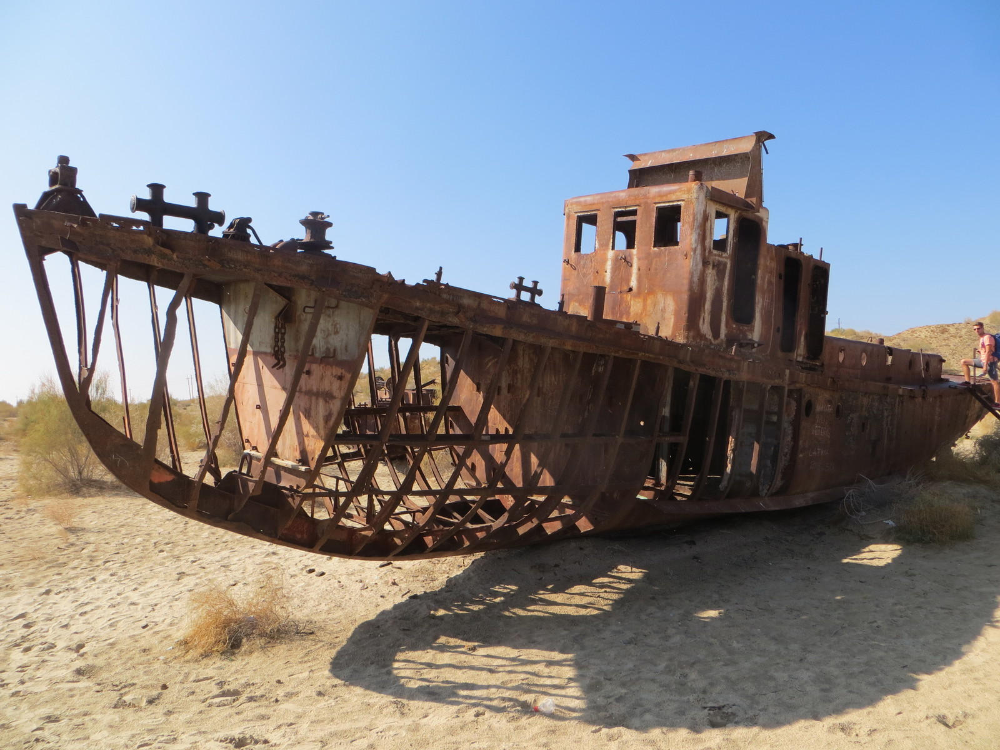
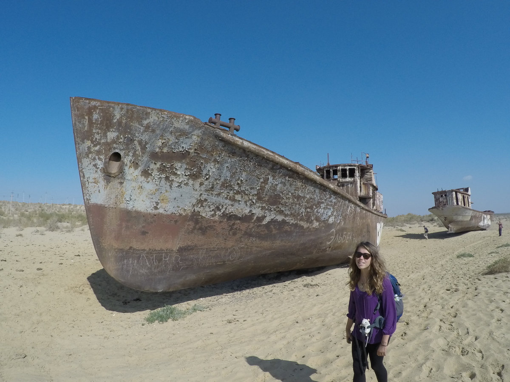

It was clear from the border that Uzbekistan was going to be a lot of... challenges. Black money, bribery and a recently deceased
dictator were the tip of the iceberg for this Stan. Needless to say, we didn't spend much time being bored...
OUR HIGHLIGHTS
Alex: The stark contrast of the proud, fish-based welcome sign to Moyn'aq, with it's desert-like surroundings.
Brianna: Being 'unofficially' taken in off the streets by a nice local family for the evening to recover from all the trains.
Cheddar: Helping our train compadre pick between photoshopped Cheryl Cole or Katy Perry eau de toilette for his wife.
It's 2:00am. You disembarked from a 12hr train three hours ago and your next train to Uzbekistan has finally appeared. You board. A guy who, to your fatigued brain, looks like a Central Asian Michael McIntyre directs you to the wrong seat. Nightmare. But it's okay because there's already a family of four in your seat anyway. The elderly gentleman, who is already asleep across from you, had his bedding taken away because in Uzbekistan, unlike Kazakhstan, you need to pay for your bedding. And we don't have any Uzbek currency. In fact, you can't even get Uzbek Cym (Som) outside Uzbekistan. The train has a strong, stale, metallic smell. A women comes and asks if she can stash a bunch of contraband food items under our seat. Her seat, it turned out, was full of somebody else's smuggled goods. Cement, pasta, TVs and a year's worth of milk were just some of the items we saw in our carriage. This didn't bode well with what we had read about Uzbek customs.
Before boarding the train we had read up all the illicit items that could get you into trouble/ force a bribe out of you if you got caught. Uzbek border guards had the right to go through medical kits and check laptops, phones, e-readers, books for anything they deem damaging to the state. No codine can cross into Uzbekistan and you have to account for every cent you bring over the border. This included all of our souvenir currency and left over change from every country we had been to so far, which meant a lot of time was needed to fill in multiple forms. Cheddar decided to claim 1 Japanese Yen (don't ask me where it came from) for the hell of it. They were not impressed with this.
We had heard horror stories from other travellers about all their messages being read, belongings taken apart etc. The elderly blanket-less gentleman even gave his breakfast eggs to Michael McIntyre to look after so as not to attract the attention of the massive alsations scouring the walkway. Lucky for us, we were the least of the authorities' problems on that train so we managed to sneak through unscathed. By the time the train had been swept 'clean', all the passengers were satisfied and the guard's pockets were a little heavier.
Even though dawn had broken by the time the train actually managed to move anywhere, we still had 11 hours to catch up on some much needed
sleep. Or so we thought. After attempting to ignore the food sellers shouting various Uzbek breakfast foods I can't spell, the black market
money exchangers calls of 'DOLLAR DOLLAR TENGE TENGE RUBLE RUBLE' and the woman hauling huge barrels of clothes up and down a very narrow
aisle, we decided to give up on sleep entirely and embrace the madness. In Uzbekistan, it would seem that the market comes to you. The
elderly gentleman across from us was loving life, treating himself to a little shopping spree and asking or our opinion on presents for his
wife and grandchildren. Cheddar tried and failed to impart his self-professed style wisdom on our new compadre, not realising we had crossed
into uncharted fashion territory. We bartered for our black market money exchange rate, swapping $200 for a hefty rucksack full of
1.2million Uzbek cym in 1000 cym notes.
The train was only our first challenge of that day. The second was far more daunting. After Alex carried what he was convinced was a body bag off the train for a woman, we went in search for somewhere to sleep off the journey. Normally, finding spontaneous accommodation isn't a problem, but normal doesn't eist in Uzbekistan. Especially when you are in the autonomous region of Karakalpakstan. Yes, a Stan within a Stan. All foreign tourists have to stay and register at a government approved hotel, of which there are none in the small town of Kungrad, where we had found ourselves. We put our faith in offline apps and followed maps.me to something that claimed to be a hotel. Nothing. Our back up plan was to seek refuge and registration in the local sanatorium (we had read a blog of a cyclist doing this). No joy here either - we weren't the first people to try that stunt. We went to register officially in the local government office. They told us no and that our nearest option was an expensive hotel a 'short' 60km taxi ride away. So we wandered the streets looking lost for about half an hour until we bumped into some locals. When we asked them if they knew somewhere to stay they put us in contact with a local guest house straight away. We didn't blend in well in Kungrad, having to sneak out for our dinner of lagman without attracting the attention of authorities. We wanted to protect our hosts who had generously taken us in despite it being a legal grey area.
All of this faff was worth it in the end, not only for the experience but also for a chance to lay eyes on what once was the Aral sea. The huge monument that welcomes you to Moynaq boasts a prosperous fishing industry for this ex-port town. It only took a couple of generations for all of that to disappear. You can now walk along sand imprinted with the patterens of the deceased waves on the old seabed and marvel at the rusty boat skeletons that dried up along with its waters. It is tragically beautiful, and a stark reminder of the devastation humans can have on the environment. A whole sea lost so that Uzbekistan can water a crop that needs the added insult of forced labour to make economically viable.


Having not known much about the Aral sea before we visited, it was a definite life lesson and allowed us to contribute to the increasing awareness of such global travesties. It had been a mental 48hr introduction into Uzbek life, and, with our attempts to continue on East to Khiva that afternoon, it was only going to get weirder.
Until then, friends!